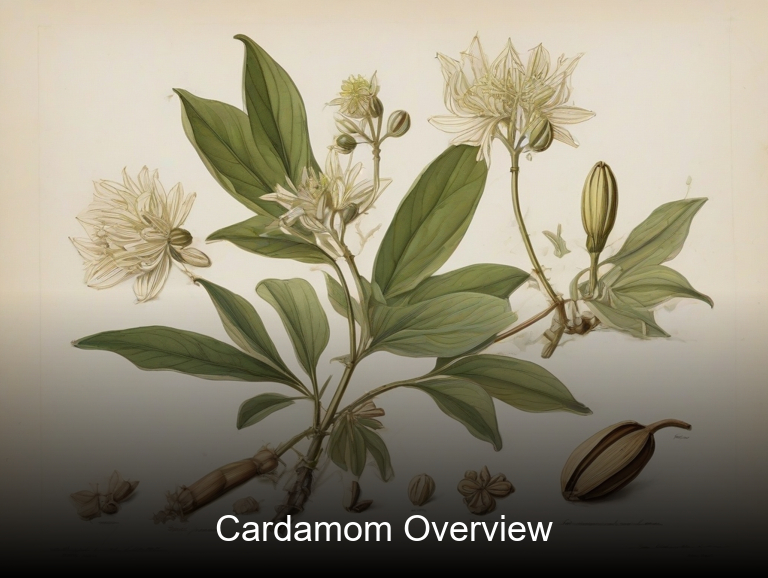
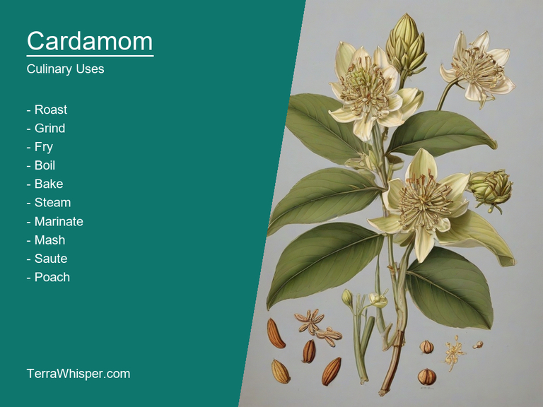
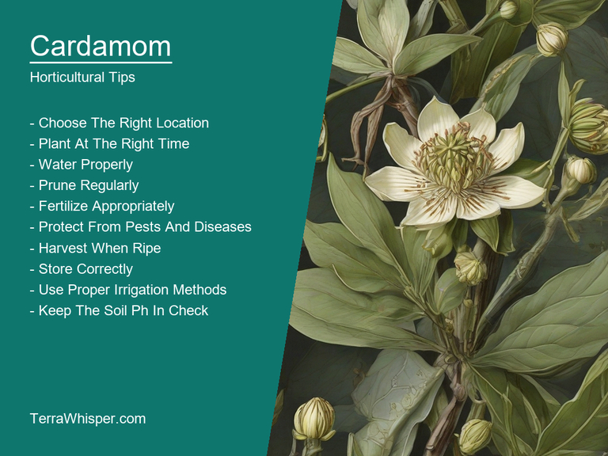
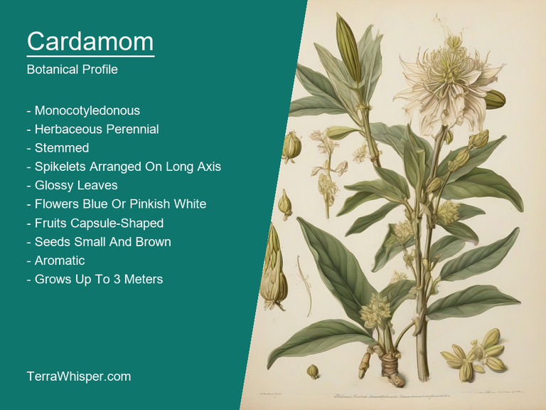
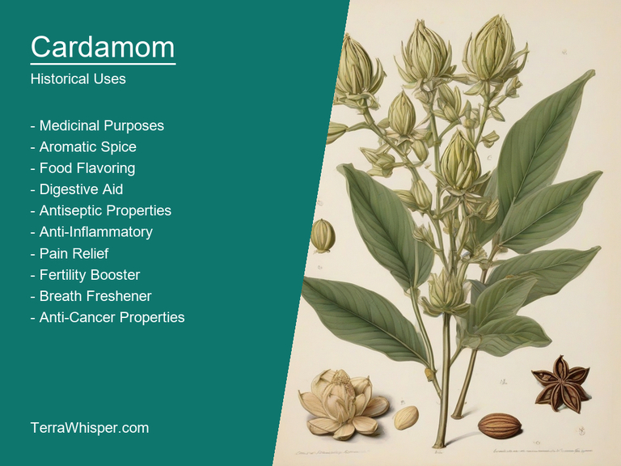

Cardamom, scientifically known as Elettaria cardamomum, is a versatile spice used in both culinary arts and medicine due to its unique flavor profile and health benefits. The plant belongs to the Zingiberaceae family and thrives in tropical climates, particularly India and Southeast Asia. Its seeds are encased within greenish-brown pods that contain around 10 to 20 tiny black seeds each.
In culinary usage, cardamom is a popular ingredient in various dishes across cultures such as curries, soups, breads, and desserts. The pungent aroma and sweet flavor make it an excellent choice for baking pastries like cookies, cakes, or apple pies. Additionally, cardamom has medicinal properties that include treating digestive issues, reducing inflammation, and even improving oral health by combating bad breath.
Apart from its culinary and medicinal uses, cardamom is also cultivated as an ornamental plant in home gardens due to its pleasing visual appeal. The lush green foliage, bright flowers, and attractive pods make it a stunning addition to any garden setting. In addition, the plant's tolerance of different soil types and its adaptability to various climate conditions makes it an ideal candidate for those seeking a low-maintenance yet beautiful garden accent.
Lastly, the history of cardamom dates back thousands of years with its earliest documented use in ancient Egyptian, Greek, and Roman civilizations as both food flavoring and medicinal agent. Today, it remains a beloved spice across various cultures while being deeply rooted in numerous religious rituals and ceremonies. The unique blend of fragrance and taste derived from Elettaria cardamomum has solidified its importance as a treasured commodity within both global kitchens and cultural traditions.
In this article, you will discover what are the medicinal and culinary uses of cardamom. Then, you'll learn how to cultivate it, what is its botanical profile, and how it was used historically.
Cardamom (Elettaria cardamomum) has many health benefits, such as helping in digestive health issues by increasing appetite and relieving indigestion symptoms. This herb can also prevent flatulence, which is a common problem arising from improper digestion of food. It also plays an essential role in treating respiratory disorders like asthma and bronchitis, as it has anti-spasmodic properties that help relax the muscles around the airways and alleviate constriction. Cardamom acts as a natural diuretic, which promotes healthy kidney function by flushing out toxins from the body through urine. It also improves liver function, reduces inflammation, and aids in fighting certain forms of cancer. These amazing properties make cardamom an important medicinal plant for overall well-being.
The following illustration lists the most important uses of cardamom in medicine.
Cardamom possesses various medicinal constituents that contribute to its multiple benefits. These components include essential oils, vitamin B6, calcium, iron, magnesium, manganese, potassium, phosphorus, fiber, zinc, and sodium. Its oil is primarily composed of terpenoids, such as sabinene, myrcene, limonene, β-pinene, and carvone, which offer several medicinal properties. These essential oils work with its potent flavonoid compounds to provide strong antioxidant abilities to protect the body from free radical damage. The vitamins, minerals, and antioxidants present in cardamom contribute to its numerous health benefits.
There are various parts of the cardamom plant that can be used for medicinal purposes. The seeds, pods, and oils extracted from them all contain a diverse array of bioactive compounds, which make them effective against multiple health conditions. Cardamom seeds and pods can be ground or used as whole spices in cooking to add flavor while providing their beneficial properties. Meanwhile, the essential oil derived from the plant's steam distillation acts like a powerful concentrated extract, making it more potent for specific treatments such as inhalations or topical applications. Cardamom is also available in various forms, including capsules, tinctures, and teas, to make it easier for people to incorporate into their daily routines.
While cardamom offers numerous health benefits, there are some potential side effects that should be considered. Overconsumption may lead to heartburn or acid reflux in some individuals due to its warming properties. It can also have mild diuretic effects, which could interfere with certain medications, so it is crucial to consult a healthcare professional before using cardamom if taking prescription drugs. Additionally, people with known allergies to members of the ginger family should avoid this plant because it may cause similar reactions in these individuals.
To maximize the benefits and minimize possible risks while consuming cardamom for health, it is essential to follow some precautions. Be cautious when increasing your intake gradually, especially if you are new to using it. Monitor your body's reaction, and if any adverse effects are noted, reduce consumption or discontinue use. Maintaining a balanced diet and consulting healthcare professionals, including herbalists and nutritionists, can further enhance the well-being benefits of incorporating cardamom into your lifestyle.
Cardamom (Elettaria cardamomum), a spice with numerous culinary applications, is derived from a species of the Zingiberaceae family and native to South India. It adds flavour and aroma to various dishes, including savory ones such as curries and rice preparations. The seed pods are used in cooking, while the seeds themselves can be used whole or ground into powder. Cardamom pods consist of three tiny, brown seeds which release their essential oils when crushed or chewed upon, imparting a unique flavor to any dish they're added to.
The following illustration lists the most common uses of cardamom for culinary purposes.

The spice offers an intensely aromatic, sweet-spicy flavor profile with subtle undertones of mint and citrus. It is often used as a complimentary spice in Asian and Scandinavian cuisines, as well as being featured in Middle Eastern sweets, baked goods, and beverages like chai tea and coffee. The spicy heat, paired with the freshness of mint and sweet-citrus notes, creates an appealing depth to various culinary preparations.
Cardamom's edible parts include the seed pod and three tiny seeds within it. These components are commonly used in diverse recipes worldwide due to their distinctive flavors. The whole or ground cardamom can be added at any stage of cooking, be it simmering a soup, baking pastries, or seasoning a main course, adding warmth, fragrance, and depth to the dish.
When using cardamom in your culinary endeavours, there are several tips to keep in mind for optimal results. To release its full flavor potential when roasting meats like lamb or poultry, sprinkle whole pods on top of the meat before cooking. For an added aroma, place a few crushed cardamom pods within simmering sauces or rice dishes. As it's easy for seeds to slip through a spice mill, use a mortar and pestle to crush them properly prior to using in recipes.
While cardamom offers various culinary benefits, consuming excess amounts may lead to side effects or negative impacts due to its potent components, such as essential oils. High intake of cardamom can result in adverse reactions like nausea, vomiting, or irritation to the mouth and throat due to sensitivities. Additionally, pregnant women should exercise caution with cardamom use, as it may cause uterine contractions. It's crucial to practice moderation in both cooking and consumption of this flavorful spice for optimal safety and enjoyment.
Cardamom (Elettaria cardamomum) is a perennial herbaceous plant native to South India, belonging to the Zingiberaceae family. Growing this spice requires specific conditions in order for it to thrive. These plants grow best in warm and humid climates with temperatures ranging from 20-30°C (68-86°F). The ideal soil type is rich in organic matter, well-drained, and slightly acidic (pH between 5.5 and 6.5).
The following illustration lists the most important tips to cutlitvate cardamom.

For successful planting, choose healthy seeds or seedlings during their dormant period. Plant cardamom crops within fertile and moist environments under partial shade conditions. Prepare the ground with proper tillage to allow better drainage and root development. Spacing between plants should be approximately half a meter (20 inches) for optimum growth.
To ensure healthy growth, water the plants regularly but avoid over-saturation, which may lead to rotting. Maintain a balanced fertilization plan with organic manure and nutrients throughout their life cycle. Cardamom plants require pruning every three to four years by carefully removing old stems and leaves to promote new growth.
Harvesting cardamom pods typically occurs after two to three years of planting, when the plants reach maturity. This spice harvest consists primarily of picking fully ripened green or brown pods from the stems. To avoid damaging unripened pods, only collect those that are ready for picking by checking their size and color.
Finally, it is crucial to be aware of potential pests and diseases affecting cardamom crops, which can significantly reduce yields and plant health. Common threats include white grubs, cutworms, leaf rollers, and stem borers. Diseases such as root rot, damping-off, and yellow-vein mosaic virus may also impact the plants' well-being. Regular monitoring and prompt control measures can help maintain a healthy cardamom crop.
Cardamom, with botanical name Elettaria cardamomum, belongs to the domain Eukaryota, kingdom Plantae, phylum Spermatophyta (flowering plants), class Magnoliopsida (dicotyledons and some monocots), order Zingiberales, family Zingiberaceae, genus Elettaria and species cardamomum. Common names for Cardamom include small cardamom or green cardamom to differentiate it from the bigger black cardamom, which is a closely related relative that differs in size and taste.
The following illustration display the botanical profile of cardamom.

Two varieties are Green Cardamom (Elettaria cardamomum var. minor) and Black Cardamom (Amomum subulatum). Green Cardamom has long slender pods with about eight seeds, whereas black cardamom has larger rounded to club-shaped pods containing fewer seeds.
Geographically, Cardamom is native to the Western Ghats and other areas of South India and Southeast Asia. It thrives in warm tropical climates, primarily on high slopes, moist soils with rich organic content and well-drained conditions. In natural habitats, it prefers dense shade under trees, forest clearings, or along river banks where there is ample sunlight to promote its growth.
Cardamom's life cycle involves both the germinating seeds and growing from seedlings into plants with flowering stalks. These flowering stalks produce small flowers which are pollinated by insects and bees. The flowers grow and give way to fruit-bearing pods, containing the famous black or green cardamom seeds inside. The whole plant eventually dries out in autumn, shedding the seedpods on the ground, which can then germinate the next year to start a new life cycle.
The cardamom plant (Elettaria cardamomum) has been historically significant for its use in traditional medicine, divination practices, and various legends throughout cultures across the world.
The following illustration lists the most well known historical uses of cardamom.

Cardamoms have been used for their medicinal properties for centuries. In Ayurveda, an ancient Indian system of health that focuses on holistic well-being, cardamom is believed to be a potent antioxidant and anti-inflammatory agent. It has been utilized in treating digestive issues such as nausea, bloating, or diarrhea, respiratory problems like congestion, coughs, or colds, and even for dental care by promoting oral health. The plant also contains essential oils which may help alleviate stress and anxiety, while its aromatic properties contribute to a sense of calmness.
In many ancient societies, cardamom was associated with mystical powers and used in divination practices. These rituals were believed to communicate messages from the spiritual world by interpreting patterns or symbols found within the plant's components such as its seeds, leaves, or pods. For instance, Chinese diviners would often use a form of tea brewed with cardamom seeds and other herbs in order to enhance their intuition during prophetic readings. Similarly, some Indian traditions used cardamom as an offering to the gods, hoping that it would bring good fortune and protection from evil spirits.
Numerous legends revolve around the cardamom plant's ability to transport its user through different realms or dimensions, fostering connections between the physical world and other realms of existence. One such legend is derived from Indian folklore. The story goes that a young girl was granted three wishes by a wise man in return for saving his life. She used her wishes wisely, but when it came to her final wish, she asked for an elusive cardamom plant that could take her anywhere she wished - even to the heavens or to other worlds. This legend has become a metaphor for seeking knowledge and spiritual growth through the magic of nature and symbolic meaning inherent in everyday objects.